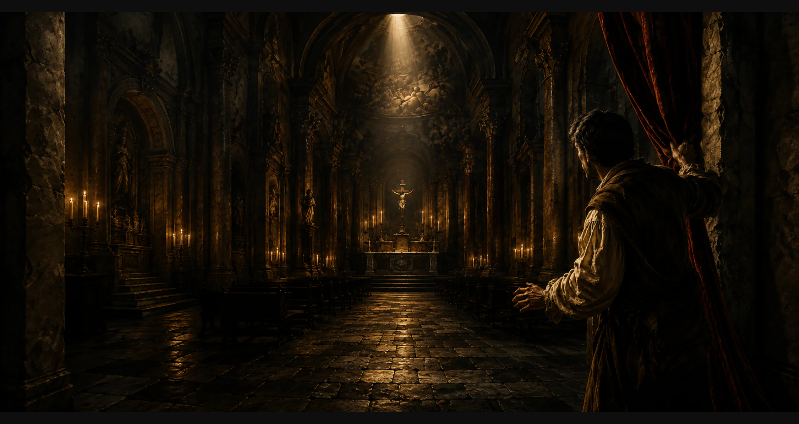

Durante muitos anos, eu tinha convicções muito fortes sobre a Igreja Católica.
Eu não as havia construído por maldade. Eram fruto do que eu tinha aprendido, ouvido e acreditado desde cedo. E, sinceramente, eu achava que conhecia muito bem a Igreja. Até que um dia resolvi fazer algo que nunca havia feito antes: conhecê-la por ela mesma. Não pelos comentários de quem estava de fora. Não pelos estereótipos. Não pelas discussões da internet. Resolvi estudar sua história, sua doutrina, a Bíblia, os primeiros cristãos e os escritos daqueles que viveram muito próximos dos Apóstolos. Foi uma decisão que mudou profundamente a minha vida.
1. Descobri que os católicos adoram somente a Deus
Durante muito tempo, eu acreditava que os católicos adoravam os santos. Depois, compreendi que a Igreja sempre ensinou que somente Deus recebe adoração. Os santos são honrados porque permitiram que Cristo transformasse suas vidas e se tornaram testemunhas da santidade.

2. Descobri que pedir a intercessão dos santos não diminui a centralidade de Cristo
Eu imaginava que recorrer aos santos significava colocar outros mediadores no lugar de Jesus. Ao estudar mais profundamente, compreendi que toda graça vem exclusivamente de Cristo e que pedir a intercessão dos santos é semelhante a pedir oração a um irmão na fé. Se peço oração a um irmão aqui na terra, por que não pedir a quem vive em Cristo? São Cirilo de Jerusalém (c. 313–386 d.C.) testemunha que a Igreja já rezava em comunhão com os santos desde os primeiros séculos.
3. Descobri o verdadeiro sentido das imagens
Eu realmente acreditava que os católicos adoravam imagens. Depois, compreendi que elas não são deuses, mas sinais visíveis que recordam aqueles que pertencem a Deus. Em Êxodo 25, 18–20, o próprio Deus manda confeccionar querubins para a Arca da Aliança. O pecado condenado é a idolatria, não a veneração de imagens que apontam para Deus.
4. Descobri a beleza da sucessão apostólica
Durante muitos anos pensei que o papado fosse apenas uma estrutura humana. Depois, conheci a continuidade histórica da Igreja desde os Apóstolos e a riqueza da sucessão apostólica. Cristo confiou uma missão especial a Pedro (Mt 16,18–19; Jo 21,15–17). São Clemente de Roma (c. 35–99 d.C.) e Santo Irineu de Lião (c. 130–202 d.C.) testemunham a sucessão apostólica já nos primeiros séculos. São Paulo ensina: “Permanecei firmes e conservai as tradições que aprendestes” (2Ts 2,15). A fé foi transmitida pela Escritura e pela Tradição desde os Apóstolos.
5. Descobri que muitas doutrinas são muito mais antigas do que eu imaginava
Ao estudar os primeiros séculos do cristianismo, fiquei impressionado ao encontrar diversos ensinamentos católicos presentes nos escritos dos primeiros cristãos.
6. Descobri uma Igreja profundamente bíblica
Talvez este tenha sido um dos maiores choques para mim. Quanto mais conhecia a Igreja, mais descobria o quanto ela me conduzia de volta às Sagradas Escrituras. Ao conhecer a liturgia, descobri que ela é profundamente bíblica. A Palavra de Deus permeia toda a celebração da Santa Missa.
7. Acreditava que ninguém podia ser santo.
Jesus nos chama à santidade: “Sede perfeitos como vosso Pai celeste é perfeito” (Mt 5,48). São Paulo chama os cristãos de “santos” em diversas cartas (cf. Rm 1,7; 1Cor 1,2). Descobri que a santidade não é privilégio de poucos, mas vocação de todo cristão.
8. Um convite, não um debate
Não escrevo estas linhas porque me considero melhor do que antes, nem para vencer discussões. Escrevo porque um dia alguém teve paciência comigo, me convidou a estudar, rezar e buscar sinceramente a verdade. Se você guarda dúvidas sobre a Igreja Católica, meu convite é simples: conheça-a pela própria voz dela. Leia o Catecismo, leia os primeiros cristãos, abra a Bíblia e peça a Deus que conduza seus passos. Se eu pudesse resumir toda essa caminhada em uma única frase, seria esta: “Não foi a Igreja que mudou diante dos meus olhos. Foram os meus olhos que começaram, pela graça de Deus, a enxergar a Igreja como ela realmente é”.

Monica Alves
Consagrada da Comunidade Pantokrator há 5 anos. Formada em Fisioterapia, formadora comunitária, da missão de Campinas.